01Motion and transitions
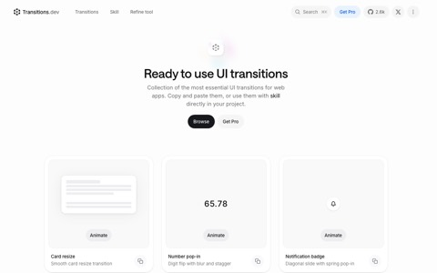
Transitions.devCopy-and-paste React/CSS transition patterns: cards, modals, panels, page transitions, icon swaps, error and success states.
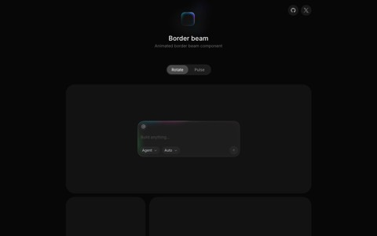
Border BeamLightweight React component that renders an animated glowing border beam. Multiple sizes, color variants, and themes. Jakub Antalik.
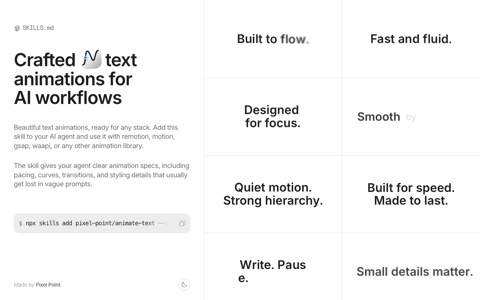
Animate Textcode ↗Text animation library from the Pixel Point team, the same people behind the agency site further down this page.
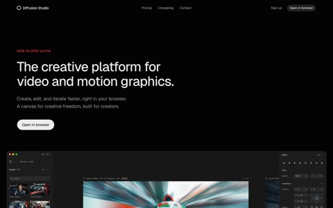
Diffusion Studio LottieGenerate production-ready Lottie animations directly with Claude Code or Codex.
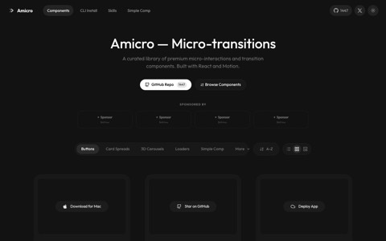
AmicroCurated premium micro-interactions and transition components, React + Motion, tree-shakeable, installed via one CLI command. Buttons, card spreads, 3D carousels, loaders.
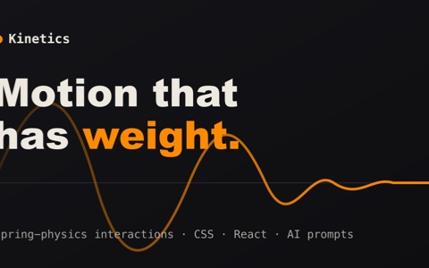
Kinetics144 open-source spring-physics interaction animations: buttons, inputs, loaders, transitions, sliders, cards. Live stiffness/damping controls, and each effect ships as CSS, React, and an AI prompt template, so an agent can rebuild it in any framework. The spring-based pick where Transitions.dev is pattern-based.
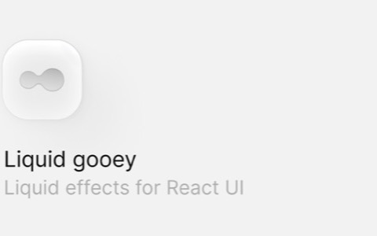
Liquid GooeyLiquid/gooey UI effects for React: melting cards, liquid trails, dissolve, push-spread. Tunable controls in an interactive playground, SVG-filter based. npm install liquid-gooey, MIT. Jakub Antalik.
- Aval
Open-source format for interactive video on the web: a built-in state machine, frame-accurate transitions, and transparent video. From the Pixel Point team.
02Components and site features
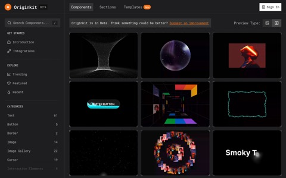
OriginkitFree animated component library, MIT. 3 delivery paths: copy the code, use it in Framer, or connect through MCP so an agent can pull components without a human copy-paste step.
- React Bits
Animated UI components for React, open source.
- ObsidianUI
React and Tailwind CSS component library with interactive effects, featured components, and source code intended as a customizable starting point.
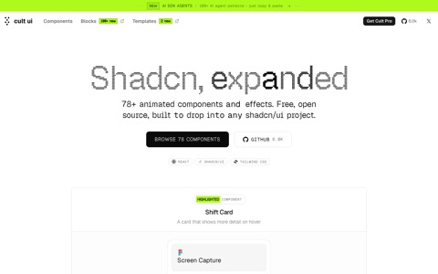
- Blossom Carousel
Native-first carousel with drag support for pointer devices. Scroll-snap under the hood rather than a JS reimplementation.
- metadata-gen
Zero-install CLI that generates OG images and favicon sets from your project's existing assets and config. The ship-day checklist items every site needs.
- make-pages-interactive
Paras Chopra experiment for adding interactivity to static pages.
03AI and agent interface components
The primitives that are genuinely hard in agent products and have no settled conventions yet. Approvals only appear in Beautiful UI, citations only in AIcss, and Orbs is the thinking indicator alone. Pick per surface rather than standardizing on one.
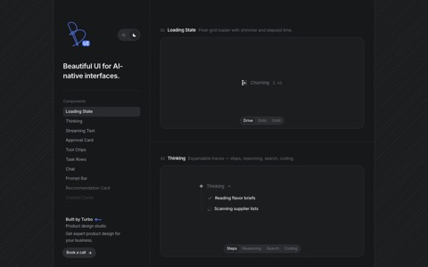
Beautiful UICrafted copy-paste primitives for AI-native interfaces: chat agents, thinking states, and human-in-the-loop approvals. React, MIT signalled. Lives on a Vercel preview URL, so it may move.
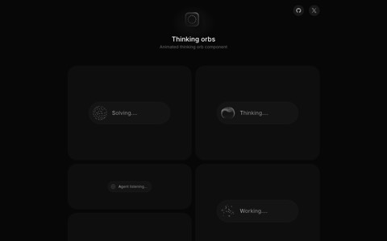
Thinking OrbsDotted thought-orb loading indicators for AI and agent UIs. 6 hand-tuned states rather than one spinner, so "thinking" can read differently from "waiting on a tool". Auto dark/light. Jakub Antalik.
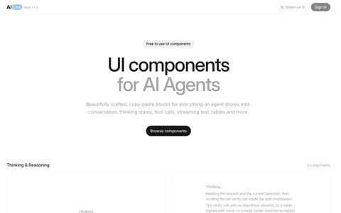
AIcssCopy-paste components for agent conversations: tool calls, streaming text, citations, thinking states, tables. Ships React, Vue, and Svelte in plain CSS with no Tailwind, which the others all assume.
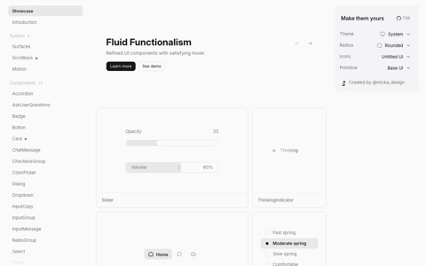
Fluid FunctionalismOpen-source component system by @micka_design: 23 components with a documented motion language, a standard set plus agent primitives like ChatMessage, ThinkingIndicator, ThinkingSteps, and AskUserQuestions. Those last two are shapes none of the trio above ship.
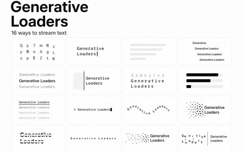
Generative LoadersAnimated React loaders purpose-built for AI generation states: text, inline, and image, each output type getting its own treatment. The loading half of the stack: Orbs covers thinking, this covers output streaming in.
04Agent workflow tools
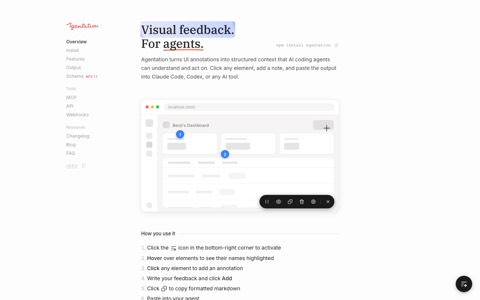
AgentationVisual feedback tool for agents: annotate a rendered UI and hand that to your coding agent instead of describing the problem in prose.
05Shaders, canvas, and WebGL
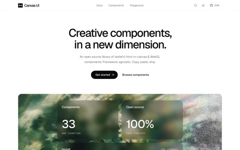
Canvas UIOpen source html-in-canvas and WebGL effects for React, Solid, Preact, Vue, Svelte, and vanilla JS. Claims effects run over live HTML, which if true avoids the usual cost of turning your DOM into a texture.
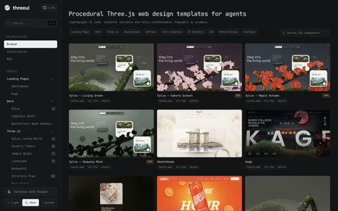
ThreeUIFrom DesignCode. 220 Three.js, WebGL, and canvas components plus complete landing-page templates, each shipping an implementation prompt beside its source, so the handoff to a coding agent is the product. Free Community tier on npm (
@designcodeio/threeui, React 18.2+); Pro adds gated source via a CLI and a remote MCP server with OAuth. Whole pages, where Canvas UI and Liquid Metal are single effects. Pro pricing sits behind a sign-in.- Liquid Metal
Real-time WebGL metal shader for buttons and UI components. 3 presets, one slider. The chrome is computed on the GPU every frame, which is why it reads as real metal where CSS gradients fall flat. Check reduced-motion and low-end device cost before putting it on a primary CTA. Jakub Antalik.
- Holocloth
Real-time holographic cloth: drape posters and graphics on simulated fabric with an iridescent foil shader, Verlet physics, film grain, and transparent PNG export. Three.js + React, shaders from scratch.
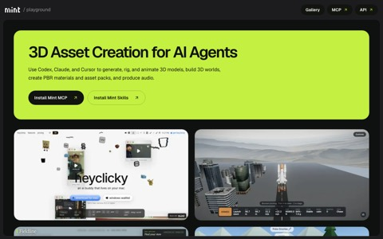
Mint Playgroundcode ↗Open-source Three.js experiences built with Mint MCP and Mint Three.js skills. A reference set for agent-built WebGL.
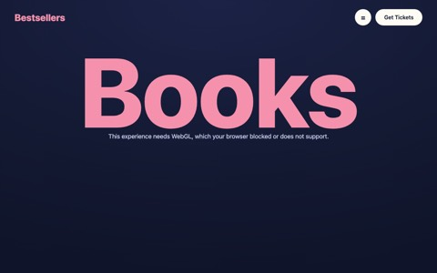
Trevor Noah books page in Three.jscode ↗Remake of Trevor Noah's book-collection page in Three.js, built with Claude. A readable example of a 3D content page.
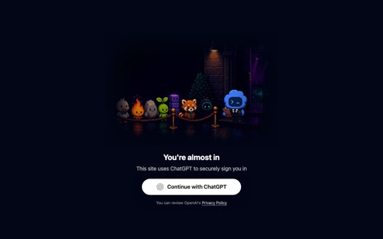
Tea Leaf Scroll Worldcode ↗Immersive scroll-driven 3D journey following a tea leaf from mountain mist to cup. A scrollytelling reference.
- scroll-world skill
Agent skill that turns any brand into a scrollable 3D world landing page. The repeatable version of the tea-leaf pattern above.
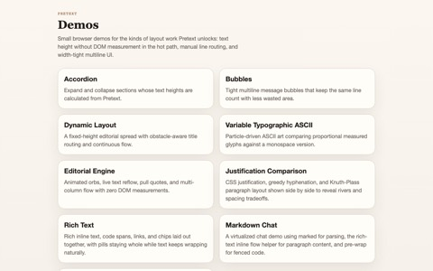
Cheng Lou pretext demosGrowing glossary of web UI and rendering demos, some practical, some pure showcase.
06Design systems and agent-readable design
The DESIGN.md wave: portable design rules your coding agent can read, plus the skills that teach agents taste.
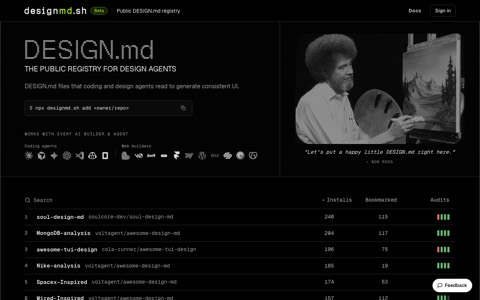
designmd.shPublic registry of DESIGN.md files plus a CLI:
npx designmd.sh add <owner/repo>. The actual tooling under all the DESIGN.md announcements.- awesome-design-md
DESIGN.md files reverse-engineered from popular brand design systems. Drop one in and let the agent generate a matching UI.
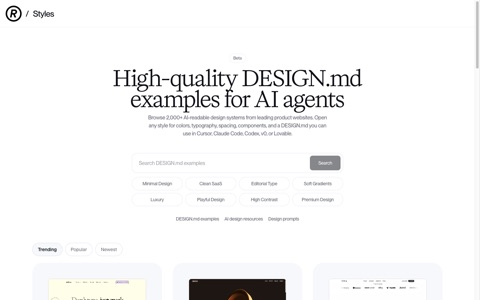
Refero Styles2,000+ DESIGN.md files scraped from real product websites — colors, typography, spacing, components. Plus design prompts and a Refero MCP that hands an agent real product screens and full user flows. The scale version of awesome-design-md.
- MotionSites AIMCP ↗
500+ website-design prompts for landing pages, apps, sections, and animated backgrounds. Its MCP serves the prompts directly to Claude, Cursor, and Codex.
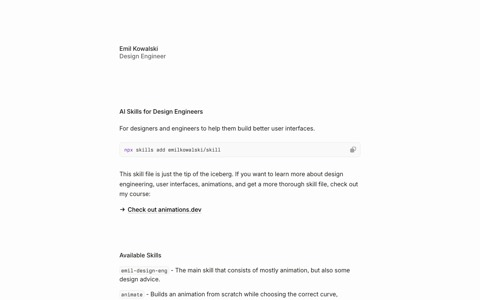
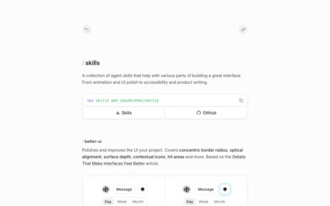
Jakub Krehel skillscode ↗Agent skills for building great interfaces: animation, UI polish, accessibility, product writing.
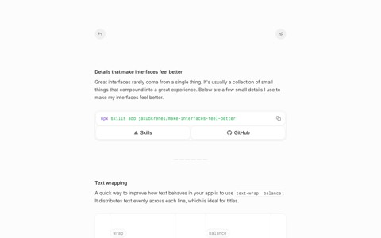
- Meng To Skills
Agent skills for designers and builders, works across Codex, Claude, and Cursor.
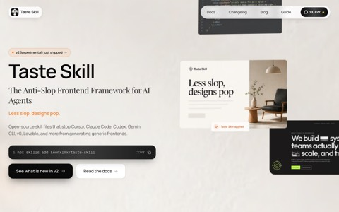
taste-skillcode ↗A skill that gives an AI "good taste" and stops generic design slop. Same family as make-interfaces-feel-better.
- ai-design-skills
Design-skills repo from elayadesign. No description on the repo yet, may be early.
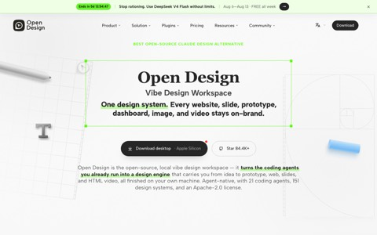
Open Designcode ↗Open-source Claude Design alternative: a local-first desktop app where your coding agent is the design engine for prototypes, landing pages, and dashboards. Real files, HTML/PDF export, bring your own key across 20+ CLIs.
- Stitch MCP server
Pipe Stitch UI designs directly into coding agents and IDEs: generate new screens and fetch their code without leaving the editor.
- UI style exploration skill
Agent skill for exploring different UI styles and variations with back-and-forth between designs inside a coding agent.
- Claude Code frontend-design plugin
Official frontend-design plugin for Claude Code that raises the visual quality of generated UI.
- designmd.sh
Public registry of DESIGN.md files, the design-system documents coding agents read so the UI they build stays consistent. Install one with
npx designmd.sh add <owner/repo>.
07Landing pages and inspiration
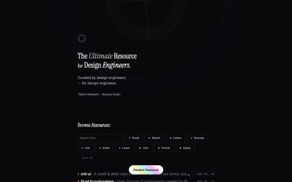
DesEngsCurated design-engineering resource directory, by design engineers: read, watch, listen, browse, use, build, and learn modes, plus a talent network. A directory of directories, good for finding what this page missed.
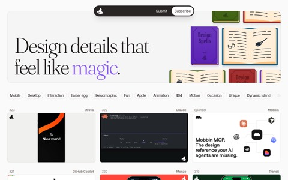
Design Spells322+ single design details from shipped products, each one named: the effort-selection animation in Claude Code, a hidden minigame in GitHub Copilot, Monzo's unlock. Pitched at one interaction rather than a whole library, so open it when a specific surface needs a decision. Free, RSS, open submissions.
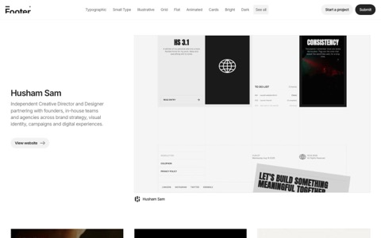
Footer.designA curated gallery of website footers, and only footers. Filter by style: typographic, illustrative, grid, flat, animated, cards, bright, dark, large type, bold. Every entry links the live site so you inspect the real footer in place. Open it when the rest of a page is resolved and the footer still reads as a dumped link list.
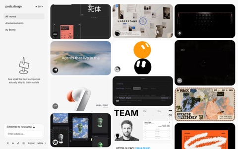
posts.design465 social posts that companies actually shipped: launch graphics, announcement cards, product updates, captured from live posts and attributed back to the source. Filter by recent, announcements, or brand. The announcement-graphic counterpart to Footer.design and Design Spells — one narrow surface, many real examples. Free, no signup.
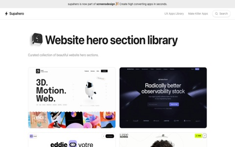
SupaheroA curated gallery of hero sections, and only hero sections — 1,000+ from shipped sites: Figma, Stripe, Notion, Apple, Tesla, plus studios and portfolios, each with a dedicated detail view. The narrow-surface family (footers, social posts, single interactions) finally covers the highest-value surface on the page. Open it first for any hero build. Free; now part of screensdesign.com.
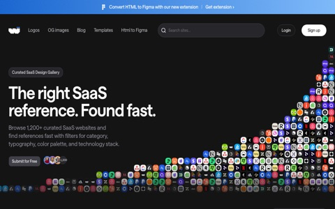
WebInspooSaaS website design inspiration gallery with unusually deep taxonomy: filter by category, tag, font, technology, and color. Ships a Site Inspector and an HTML-to-Figma extension, and it's the most agent-readable gallery on this page — it publishes an llms.txt and an MCP manifest, so your agent can query it instead of scraping it. Free to browse.
- Training AI to Paint with Code
Surya Narreddi's case study on training a language model to make images through editable code and reinforcement learning. Useful reference for AI creative tooling, reward design for subjective work, and long-form project storytelling.
- Land-book
Long-running curated website design gallery — landing pages, portfolios, product sites — browsable by category, style, and color, with a deep archive. Automated fetches hit a Cloudflare challenge, so browse it directly.
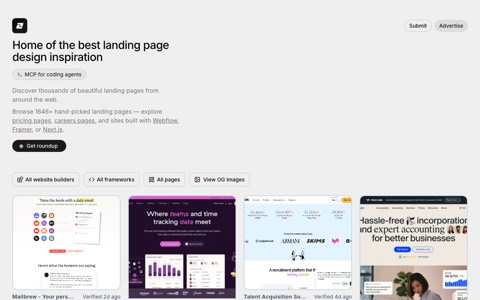
Landing.Gallery1,614+ hand-picked landing pages, free, filterable by site builder (Webflow, Framer, Shopify), framework (Next.js, Astro, SvelteKit), and page type (pricing, careers, 404). Filter to your stack first.
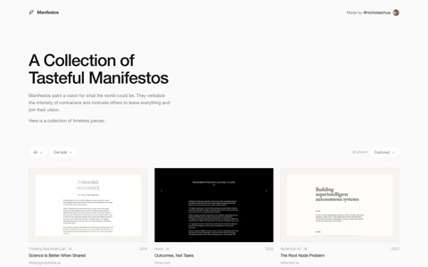
Tech Manifestos36 company manifestos and mission statements — Anthropic, OpenAI, xAI, Linear, Anduril, Tesla, Cursor, Mozilla — filterable by sector and decade. The only entry on this page pitched at the words rather than the layout, so open it for positioning and about-page copy. Free, no signup.
- Inspora
Website design inspiration and visual-reference library for finding a direction mid-build. Automated fetches currently hit a Vercel Security Checkpoint, so use a browser for the live gallery.
- Meng To sketchbook
Page-flipping sketchbook of Singapore in one static HTML file. Drag to turn pages, drag a magnifier across them. A single-file interactive-page reference.
- Mostar cinematic business card
Cinematic interactive website experience inspired by Mostar. A one-page atmosphere reference.
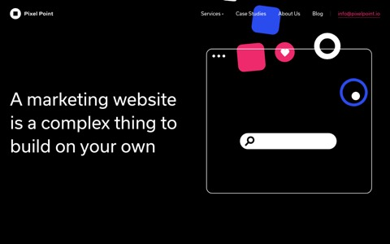
Pixel Point websitecode ↗Full source of the Pixel Point agency's JAMStack marketing site. You get real production landing-page code to mine, the whole repo.
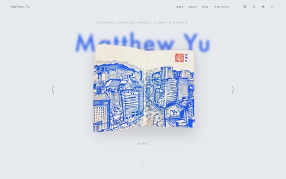
Matthew Yu portfoliocode ↗Personal portfolio with full source on GitHub. A portfolio-design reference.
- Lazyweb skill
Free screenshot references for web design plus an optional paid A/B-test agent.
- Premium corporate site design prompt
Reusable prompt for dark-mode, minimalist corporate site design with abstract 3D fluid backgrounds and glowing gradients.
08Backgrounds, gradients, and patterns
Start with the output you need: copy-ready CSS, a downloadable asset, live browser code, or a reusable React component.
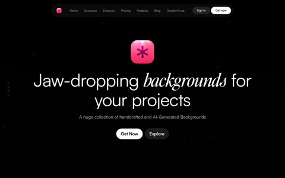
Backgrounds SupplyLarge collection of handcrafted and AI-generated backgrounds, wallpapers, and gradients, plus a Gradient Lab tool. Freemium, so check license terms per asset before client work.
- Pryzm
Combine gradients, glass, grain, and photos, then export stills, animated loops, or live backgrounds for Framer, React, and plain HTML.
- ColorFlow
Advanced mesh-gradient generator and editor from LS Graphics.
- Grainient
Grainy and smooth gradients, animated backgrounds, AI-generated backgrounds, and a real-time shader tool. Free and paid assets.
- CSS Gradient
Simple visual generator for linear and radial CSS gradients, with copy-ready CSS.
- Gradientool
Customizable 3D and animated gradient maker for hero sections and product surfaces.
- Ramps
Build color ramps and accessible palettes for interface states, surfaces, borders, and text.
- Zoxilsi Gradient Studio
Mesh-gradient studio with a large preset collection, useful when you want a starting point instead of a blank canvas.
- Tabbied
Free generator for customizable geometric background patterns.
- beUI Pro
Premium React library with animated backgrounds and motion-focused UI blocks.
09SVG, icons, logos, and visual assets
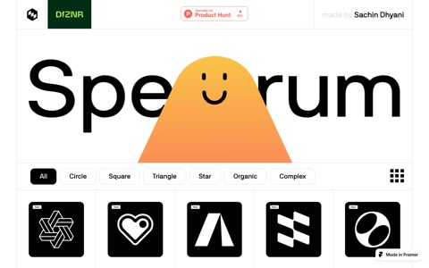
Spectrum vector shapesVector shape library for backgrounds and decorative elements.
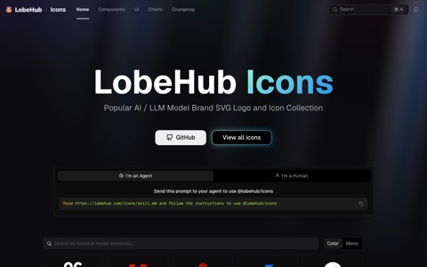
Lobe Iconscode ↗AI and LLM brand logos for React and React Native, plus static SVG/PNG/WebP, no dependencies. Directly useful anywhere a product page name-drops models.
- diagram-design
13 editorial diagram types as self-contained HTML + SVG for Claude Code. "No shadows, no Mermaid-slop."
- OG image prompt
Prompt template for generating a premium 16:9 open-graph hero image for a site or brand. Social sharing, headers, marketing.
10Sound and audio feedback
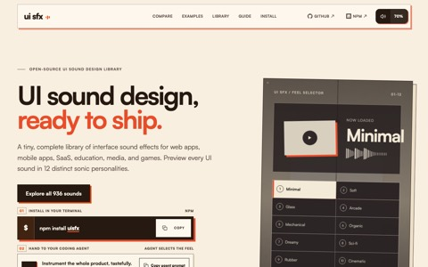
UI SFX936 interface sounds: 78 semantic cues (hover, press, select, delete) each rendered in 12 "feels" (Minimal, Glass, Arcade, Zen), so a whole product stays sonically consistent. npm, live synthesis, or MP3/Ogg download. Audio is CC0, code MIT, so it's safe in client and commercial work with no attribution.
11Site infrastructure and launch readiness
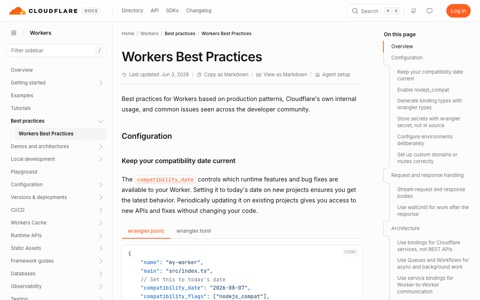
Cloudflare Workers best practicesOfficial production best-practices guide for Workers sites, also installable as an agent skill:
npx skills add cloudflare/skills.- Portless by Vercel Labs
Stable named local-dev URLs instead of localhost port numbers when you're running multiple site projects at once.
- Pre-launch security checklist
Web-app launch checklist: rate limits, RLS, CAPTCHA on auth and forms, server-side validation, secured API keys, env vars.
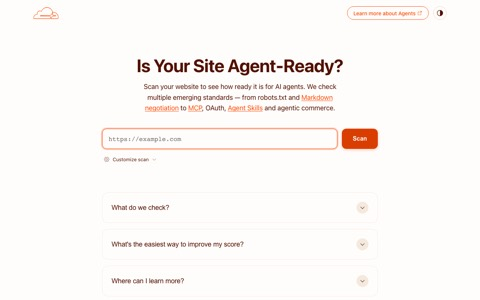
isitagentready.comCloudflare tool that audits how agent-ready and machine-readable your site is, and tells you how to fix it.
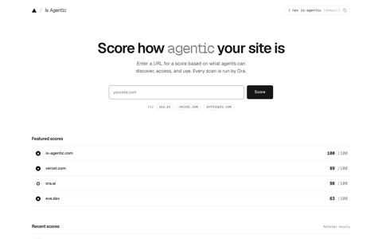
Is AgenticScores how ready a site is for AI agents, and shows the evidence behind each check rather than just a number: server-rendered content, HTTP behavior, document structure, error recovery, controls, plus API, OAuth, GraphQL, MCP, and dev-portal checks that switch on when the scan sees them.
npx is-agentic <domain>runs the same scan in a pre-deploy step. Free, no signup. Run it next to isitagentready.com above; they weight different things.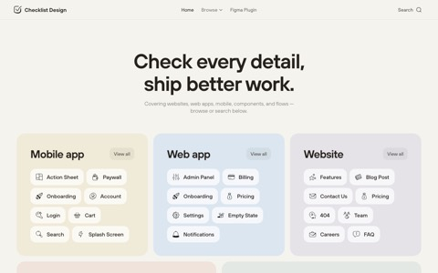
Checklist DesignDesign checklists for websites, web apps, mobile, components, and flows. Per-page (pricing, 404, careers), per-component (button, input, modal), and per-flow completeness checks before you ship. Figma plugin available.